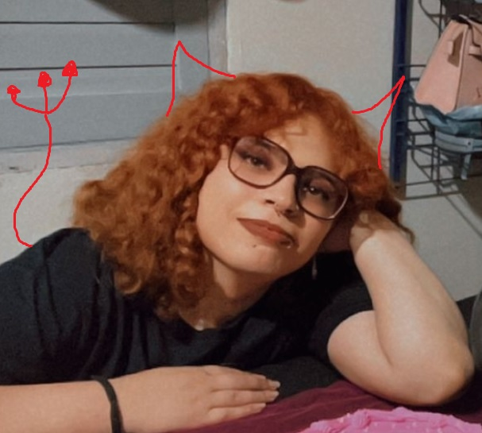

This is my website, hi!
This is my website, hi!
Olá! Meu nome é Daniela Silva, bem vinde ao meu website pessoal
Eu pretendo usar como um repositório de sei lá o que eu queira escrever. Como uso aqui pra aprender HTML e CSS, decidi separar a pagina de teste em Testing. Você pode acessar se quiser, provavelmente vai ter muito texto quebrado
Gosh, tenho tantas coisas que posso falar de mim! Como gosto de eficiência, segue uma lista não ordenada de características que acho interessante sobre minha pessoa:
- Eu sou programadora fullstack, mas prefiro backend. Trabalho com .NET e Angular (não pretendo utilizar as tecnologias nesse site)
- Sou uma mulher trans! eeeeee bandeirinha 🏳️⚧️
- Eu gosto de escrever como um válvula de escape para minhas emoções
- Eu amo videogames e falaria sobre isso por horas
- Sei lá. Me canso fácil de projetos. Ok, chega de lista
Eu sou incrivelmente preguiçosa então don't hold your breath por alguma coisa interessante no site.
É isso! É... Sei lá, tenham um bom dia/tarde/noite, bebam água. Segue uma foto minha já que leu tudo
